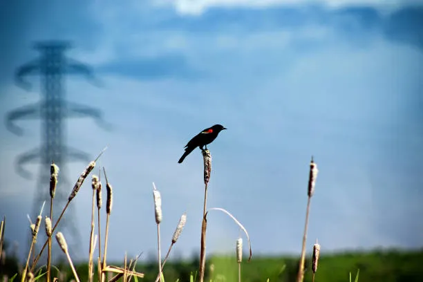
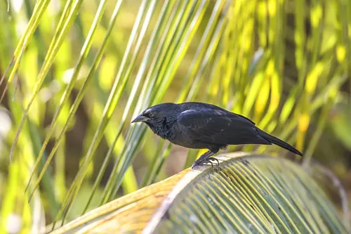
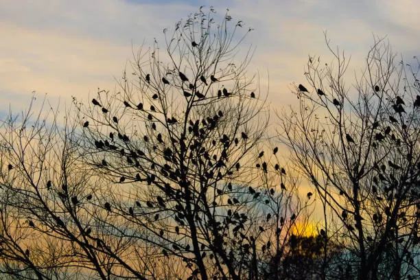
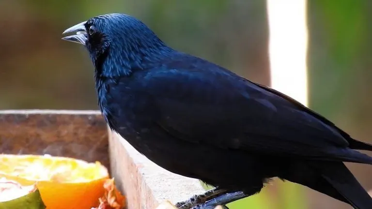

Canto marcante
A graúna possui uma vocalização forte, variada e bastante característica.
Uma homenagem à beleza, à força e ao canto marcante da graúna brasileira.

A graúna, também conhecida como pássaro-preto, é uma ave encontrada em diversas regiões da América do Sul, incluindo grande parte do Brasil.
Sua plumagem predominantemente preta e brilhante, seu bico forte e seu canto marcante fazem dela uma das aves mais conhecidas da nossa fauna.
Além de sua beleza, a graúna chama atenção principalmente pela variedade e intensidade de sua vocalização.
Descobrir maisConheça algumas características marcantes dessa fascinante ave.
A graúna possui uma vocalização forte, variada e bastante característica.
Sua plumagem é predominantemente preta e apresenta um brilho característico.
Pode ser encontrada em campos, pastagens, áreas abertas e regiões próximas a matas.
Alimenta-se de frutos, sementes, insetos e outros pequenos alimentos.
Uma pequena coleção de imagens da espécie.



Conheça, admire e valorize a fauna brasileira.
Falar pelo WhatsAppEntre em contato pelo WhatsApp.